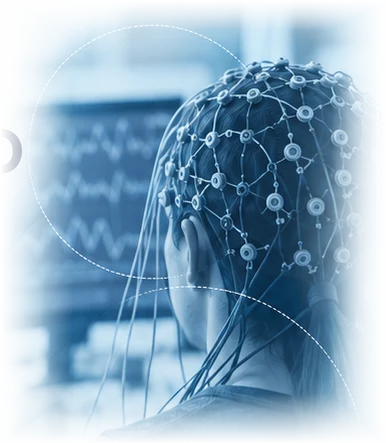
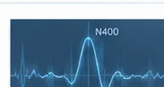

Registro neural
Utilizamos EEG de alta densidade para registrar a atividade elétrica cerebral durante a realização de tarefas de linguagem.
LAPELC² / PESQUISA / ELETROENCEFALOGRAFIA
Investigamos a atividade neural relacionada ao processamento da linguagem utilizando eletroencefalografia (EEG/ERPs) em tempo real.

Utilizamos EEG de alta densidade para registrar a atividade elétrica cerebral durante a realização de tarefas de linguagem.
Os sinais são pré-processados para remover artefatos e extrair medidas temporais, como potenciais relacionados a eventos (ERPs) e oscilações neurais.
Analisamos os padrões de resposta neural para inferir processos cognitivos envolvidos na percepção, compreensão e produção da linguagem.
Investigação dos processos neurais envolvidos na leitura, escuta e produção de sentenças.
Estudo da percepção da fala, da prosódia e da integração de informações linguísticas e paralinguísticas.
Pesquisas com crianças, adultos e populações clínicas para compreender diferenças e trajetórias de desenvolvimento.
Análise das respostas neurais durante a compreensão auditiva e a produção da fala.
Investigação do processamento visual e lexical de palavras e sentenças.

Respostas neurais a estímulos inesperados ou semanticamente incongruentes.
Estudo da integração de informações auditivas e visuais na percepção da fala.
O EEG pode ser combinado com outras medidas comportamentais e rastreamento ocular, permitindo uma compreensão mais abrangente dos processos cognitivos envolvidos na linguagem.